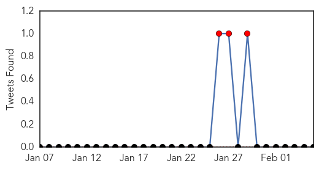

30 Day Trends
Web: 27 alerts, 0 warnings
Twitter: 3 alerts, 0 warnings
Top Articles:
- 0.997
- News Talk 610 CKTB :: More measles cases in Ontario :: News News
- 0.996
- Measles case count in Ontario rises
- 0.995
- Measles case confirmed in Niagara
- 0.995
- Disneyland measles outbreak wasn’t the first last year
- 0.995
- Measles Outbreak: Berkshire school and health officials urge vaccines for kids
- 0.994
- Disneyland Measles Outbreak Isn't Largest In Recent Memory — This Is
- 0.994
- Disneyland Measles Outbreak Isn't Largest in Recent Memory
- 0.993
- UPDATED — Measles hospitalizes middle-aged man in Port Angeles; officials 'intensely working' to determine if anyone exposed in the community -- Port Angeles Port Townsend Sequim Forks Jefferson Count
- 0.993
- Are ongoing concerns about vaccine safety to blame for the measles epidemic?
- 0.993
- Measles Outbreak Affects More Adults Than Kids. Is It Too Late To Get Vaccinated?
- 0.993
- Disneyland measles outbreak isn't largest in recent memory
- 0.993
- Disneyland measles outbreak not largest in recent memory
- 0.992
- Measles outbreak isn’t largest in recent memory
- 0.992
- Montgomery County Health Department provides facts on measles
- 0.992
- Measles Hits Illinois Daycare Center: Five Infants Infected
- 0.991
- Measles Infection Suspected in 5 Infants at Daycare Center
- 0.989
- Disneyland measles outbreak isn't largest in recent memory
- 0.989
- UPDATE 2-Five babies at suburban Chicago daycare center have measles
- 0.988
- Five babies at suburban Chicago daycare center have measles
- 0.987
- Spreading Measles Outbreak Also Takes Heavy Economic Toll
- 0.985
- Berlin counts 254 new cases of measles in 2015
- 0.985
- Measles infects 5 infants at Illinois daycare
- 0.983
- Illinois reports five confirmed cases of babies infected with measles
- 0.982
- Measles Outbreak, Measles Vaccine
- 0.982
- Breaking down the measles outbreak
- 0.982
- Sick with measles, again
- 0.981
- NC ranks 3rd best in nation for measles vaccination
- 0.981
- Health officials urge measles vaccine for parents, children
- 0.980
- Pennsylvania and, now, New Jersey have suspected measles cases, reports say
- 0.979
- Measles: Why you should worry, and shouldn't
- 0.979
- 5 infants at Illinois day care diagnosed with measles
- 0.977
- 5 infants at Illinois day care diagnosed with measles
- 0.977
- 5 infants at Illinois day care diagnosed with measles
- 0.975
- ‘How can we force vaccination?’
- 0.975
- Waterloo Region health officials watching Toronto measles outbreak
- 0.975
- Why you should, and shouldn’t, worry about measles
- 0.975
- Infants Diagnosed With Measles at Suburban KinderCare
- 0.974
- What Would It Take for Measles to Return Permanently to the US
- 0.974
- News Scan for Feb 05, 2015
- 0.973
- Why You Should, and Shouldn't, Worry about Measles
- 0.969
- 5 infants diagnosed with measles - Times-Gazette
- 0.969
- More measles cases diagnosed in Toronto, Niagara Region
- 0.969
- 5 infants at an Illinois day Care Diagnosed with Measles
- 0.967
- Region taking steps to boost vaccination
- 0.967
- important to get immunizations
- 0.967
- Disneyland measles outbreak isn’t largest in recent memory
- 0.964
- Factchecking false narratives on the measles outbreak
- 0.962
- A false narrative on origin of measles outbreak
- 0.962
- Measles Hits Illinois Daycare Center: Five Infants Infected
- 0.962
- A Call to Improve Vaccines: Measles Vaccine Is Made Using Cells from Aborted Children
Showing top 50 articles...
Top Tweets:
-
No tweets found for Feb 05, 2015
Web/News Articles

Tweets
Article Locations

Article Confidences